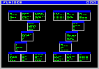

Este script começou em meados de 2001 com duas funções. Uma era um dicionário de inglês para português e a outra era uma função que ficava testando se a máquina do 'boss' estava ligada. A idéia desta função era me avisar quando ele ia embora para começar uma sessão de DOOM em rede com meus colegas do LCP, para descontrair o ambiente. =8) O nome inicial do script era dic de dicionário. Depois de muita zuação, devido ao fato da pronúncia de 'dic' se parecer muito com uma palavra em inglês, hehehe :), resolvi trocar seu nome para scr (SCRipt). etâ criatividade!! hehehe Nesta época o script tinha umas 5 funções.
Até que, no começo de 2002, procurando sites sobre shell script na internet, me deparei com o site das tais funcoeszz. Nossa, me identifiquei na hora com o programa e fiquei impressionado em ver como um 'mini-aplicativo' poderia ser tão útil. Naquela época as funcoeszz ou simplesmente ZZ já eram famosas e eram realmente um 'cinto-de-utilidades' que me quebrava o maior galho. Começei a fazer novas funções para o scr e enviar o código para o Aurélio, autor das ZZ. Virei um contribuinte assíduo, enviando códigos, sugerindo novas funções, apontando bugs, etc. Durante este tempo, foi nascendo uma afinidade muito grande (no bom sentido) com o Aurélio. Eu achava muito divertido contribuir com as ZZ, pois ao mesmo tempo eu descobria o potencial de um script e mais pessoas se beneficiavam das funções.
Então, em maio de 2003, recebi um mail do Aurélio me convidando para ajudá-lo a manter as funcoeszz sendo seu co-autor. Aceitei na hora. Desde então, começamos a fazer um 'merge' de algumas funções do scr com as ZZ. A partir de agora, todas minhas idéias de funções novas serão somente para as ZZ.
Qual o futuro do scr ? Não sei =8)
Adicionarei somente funções que não se encaixem na filosofia das ZZ, como
funções que utilizem algum outro programa (fora os tradicionais lynx,
sed...) ou que façam algo interativo.
Bom, chega de blá-blá-blá. Vamos ao que interessa: help e o fonte.

Link para as ZZ http://funcoeszz.net
scr eh um conjunto de funcoes escritas em bash que tem por objetivo facilitar o dia-a-dia de pessoas que gostam de modo texto, terminais, linha de comando, etc. ;-) WWW: http://www.lcp.coppe.ufrj.br/~thobias/scr As funcoes disponiveis atualmente sao: check, palavra, linuxnews, news, pronuncia, howto, sigla, ep, ee, esyn, pp, pe, cep, tempo, timezone, rpmfind, kernel, tamanho, latex_ps, tela, about, scr_kill, converte, gera_passwd, rping, rede, ajuda Mais informacoes: scr <funcao> --help More information: scr <function> --help[guest@thobias ~/scr]$
==== check
Test if you have all programs required by scr
Testa se voce tem todos os programas necessarios para utilizar toda as funcoes
uso: scr check
==== palavra
It shows how many times a word appears in a text
Mostra quantas vezes uma determinada palavra aparece em um texto
uso: scr palavra <word> <file>
ex: scr palavra sed scr
==== linuxnews
Show the latest 5 pieces of news of some sites about linux
Mostra as ultimas 5 noticias de alguns site sobre linux. Os sites sao:
http://lwn.net
http://linuxtoday.com
http://freshmeat.net
http://slashdot.org
http://www.osnews.com
http://www.linuxdailynews.com
http://kerneltrap.com
uso: scr linuxnews
==== news
Show the latest 5 pieces of news of some sites about computing
Funcao que mostra as ultimas 5 noticias de alguns sites sobre informatica.
Os sites sao:
http://idgnow.terra.com.br
http://pcworld.terra.com.br
http://www2.uol.com.br/info/index.shl
http://busca.terra.com.br/wired/index2.html
http://www.clubedohardware.com.br
uso: scr news
==== pronuncia
Get a .wav file with the english pronunciation of a word
Busca um .wav com a pronuncia de uma determinada palavra em ingles
uso: scr pronuncia <palavra>
ex: scr pronuncia illegal
==== howto
Search for a howto document.
Pesquisa por um determinado howto
uso: scr howto <palavra>
ex: scr howto nfs
==== sigla
search the meaning of an acronym
Pesquisa por uma sigla
uso: scr sigla <sigla>
ex: scr sigla IMHO
==== ep
Translate a word from english to portuguese (pt_br)
Traduz uma palavra do ingles para portugues
uso: scr ep <palavra>
ex: scr ep computer
==== ee
Show the word's meaning in english
Mostra o significado de uma palavra em ingles
uso: scr ee <palavra>
ex: scr ee pirate
==== esyn
show the english synonyms of a word
Mostra sinonimos para uma palavra em ingles
uso: scr esyn <palavra>
ex: scr esyn evaluate
==== pp
Show the words's meaning in portuguese
Mostra o significado de uma palavra em portugues
uso: scr pp <palavra>
ex: scr pp utopia
==== pe
Translate a word or a small sentence from portuguese to english
Traduz uma palavra ou pequena frase do portugues para o ingles.
uso: scr pe <palavra>
ex: scr pe elefante rosa
==== cep
Search for the address of a CEP
Available only for Brazil
Pesquisa qual o endereco de um CEP
uso: scr cep <00000-000>
ex: scr 21920-400
==== tempo
Display the current weather conditions in many countries
Mostra as condicoes do tempo em um determinado ponto
Se nenhum parametro for passado, eh listado os possiveis paises.
Se soh o pais for especificado, eh listado os lugares neste pais
Para nomes como Porto Alegre e Porto Alegre Aero-Porto, voce pode utilizar
as siglas apresentadas para diferencia-los. Ex: SBCO = Porto Alegre.
uso: scr tempo <pais> <local>
ex: scr tempo "United Kingdom" "London City Airport"
scr tempo brazil SBRJ
==== timezone
Display the current time in a specific place
Mostra o horario em um determinado local e o horario GMT
uso: scr timezone <local>
ex: scr timezone Brazil/West
scr timezone Europe/London
scr timezone
==== rpmfind
Search and get a package in rpmfind site.
Procura e faz download de um pacote no site rpmfind.net
uso: scr rpmfind <pacote> [system] [arch]
ex: scr rpmfind kernel redhat i386
==== kernel
Look out the latest versions of the linux kernel
If you specify the finger parameter, the finger command will be used,
otherwise, will be used the lynx browser
Consulta as ultimas versoes do kernel do linux
se voce passar o parametro finger, ele usar o comando
finger para consultar, caso contrario usa o lynx
uso: scr kernel [finger]
ex: scr kernel
==== tamanho
Get the size of files and directories, afterwards sort by size
You can use "." to specify the currrent dir
Consulta o tamanho de arquivos e diretorio e depois ordena pelos maiores.
use "." para o diretorio atual
uso: scr tamanho <DIR>
ex: scr tamanho /home
==== latex_ps
Convert a LaTeX file (.tex) to PostScript (.ps)
If the second argument is "dvi", then is only created the .avi file
If the argument is "clean", will be removed all
.aux .dvi .log .ps files of the current directory
Gera um arquivo PostScript (.ps) a partir de um arquivo LaTeX (.tex)
Se for especificado o parametro "dvi", nao eh gerado o arquivo
PostScript, ie, eh somente gerado o arquivo .dvi
Se o parametro for "clean" sao removidos todos os arquivos
.aux .dvi .log .ps do diretorio corrente
uso: scr latex_ps <file.tex | clean> [dvi]
ex: scr latex_os meu_doc.tex
==== tela
Something like a screensaver (text mode) extremely primitive ;-)
You can specify the theme, the characters to print and a number to sleep
in seconds. Use ctrl+c to terminate
Alguma coisa como um protetor de tela (modo texto) muito primitivo ;-)
Voce pode especificar o tema, caracteres para imprimir e um numero com
quantos segundo ele deve dormir
Use ctrl+c para terminar
uso: scr tela [numero tema <1-4>] [caractere a ser impresso] [numero esperar seg]
ex: scr tela 3 "Linux rlz"
scr tela 1 "." 1
scr tela 4 "linux rocks"
scr tela
==== about
Display some information about the machine. CPU, MEM, disk, uptime...
Mostra algumas informacoes sobre a maquina. CPU, MEM, disco, uptime..
uso: scr about [carac para separar]
ex: scr about
scr about "\n"
==== scr_kill
Kill processes that have a specific program name
Mata processos que tenham no nome uma determinada palavra
uso: scr kill <palavra>
ex: scr kill netscape
==== converte
Convert between:
Converte entre:
cf = Celsius to Fahrenheit
fc = Fahrenheit to Celsius
km = Kilometers to Miles
mk = Miles to Kilometers
db = decimal to binary
bd = binary to decimal
cd = Character to decimal
uso: scr converte <cf|fc|mk|km|db|bd|cd> <number>"
ex: scr converte fc 98
==== gera_passwd
Random password generator with a specify length. The default is 8
The length can be change specifying the new length as the first argument
Gera senhas aleatorias com um determinado tamanho. O tamanho padrao eh 8
O tamanho pode ser alterado passando como argumento para a funcao
uso: scr gera_passwd [tamanho]
ex: scr gera_passwd
==== rping
Test if the hosts are UP.
File has the hosts that will be tested
Consulta se um conjunto de hosts estao respondendo
arquivo e um arquivo com os hosts a serem testados.
uso: scr rping <arquivo>
ex: scr rping <file>
==== rede
Calculate and show the network load of an interface
Calcula o trafego em uma interface
Exemplo de interface: eth0, eth1, ppp0...
uso: scr rede <interface>
ex: scr rede eth0
==== ajuda
Shows the help of all functions
Mostra o help de todas as funcoes
uso: scr ajuda
[guest@thobias ~/scr]$